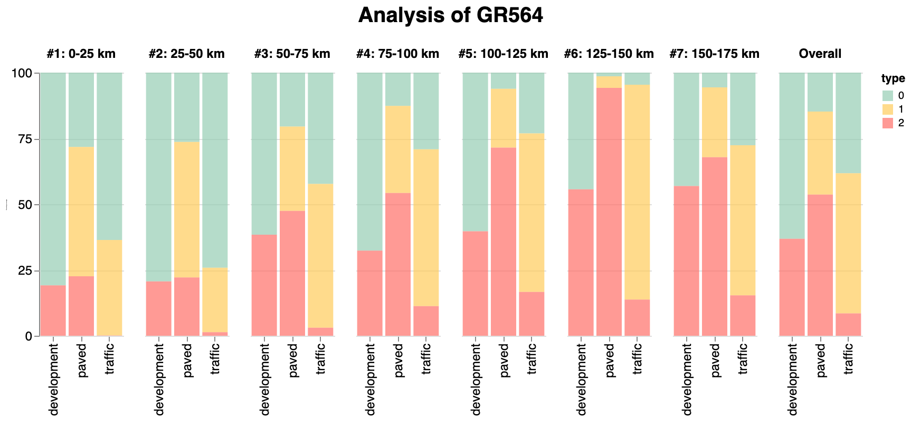
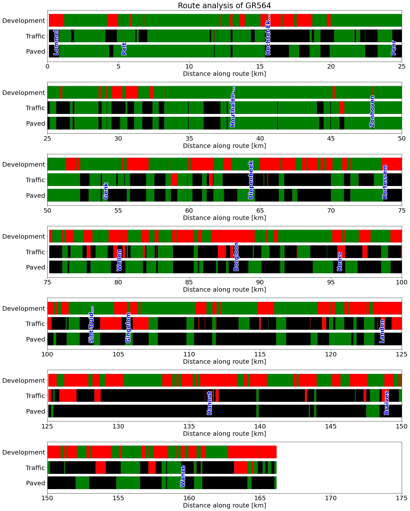

Return to overview page
GR564 (Lommel - Huy)

Paving type along the route (unpaved/semipaved/paved)
Traffic type along the route (slow/normal/busy)
Development type along the route (light/heavy)
Section plots of the route

Return to overview page